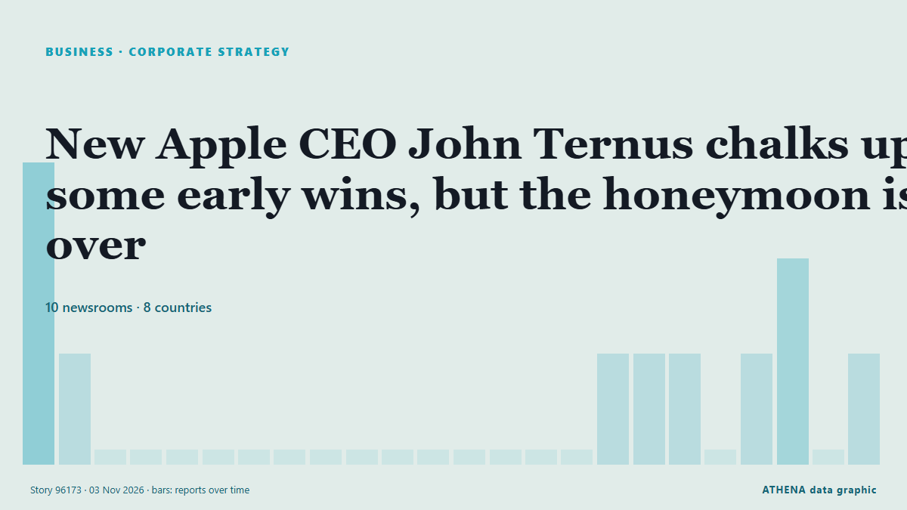

Estrategia empresarial
PatrocinadoPresentado por  Cybernetics and Artificial Intelligence Lab Welcome to the Cybernetics and Artificial Intelligence Laboratory, established at the Department of Business Administration of the National
Cybernetics and Artificial Intelligence Lab Welcome to the Cybernetics and Artificial Intelligence Laboratory, established at the Department of Business Administration of the National
| 21 oct | 0 |
|---|---|
| 22 oct | 0 |
| 23 oct | 0 |
| 24 oct | 0 |
| 25 oct | 0 |
| 26 oct | 0 |
| 27 oct | 0 |
| 28 oct | 0 |
| 29 oct | 1 |
| 30 oct | 7 |
| 31 oct | 4 |
| 1 nov | 1 |
| 2 nov | 11 |
| 3 nov | 0 |
Los titulares se muestran en inglés, tal como se publicaron.

New Apple CEO John Ternus chalks up some early wins, but the honeymoon is over
Apple beat earnings expectations Monday, but it’s facing surging memory chip costs and investor questions about its new Siri AI product. de Fortune
Ryanair to hit passengers in Europe with 'double-digit' hikes in air fares
Irish no-frills airline Ryanair said Monday it would launch a cost-cutting drive and hike fares next year to help offset the impact of soaring jet fuel prices driven by the Middle East war. de The Local Italy
The New York Times sues Brave web browser for AI scraping and bypassing paywalls
The New York Times and a group of other publications have filed lawsuits against the company that makes the Brave web browser over alleged unlawful scraping to train AI and also letting users bypass… de The Verge
UAE’s Al Habtoor Group to sell all assets in Lebanon: What to know
The company suspended operations in Lebanon back in January, citing massive losses exceeding $1.7 billion due to the country's financial crisis, capital controls and security concerns. de Al-Monitor
Rail Rivalry: Schneider’s Bold Move to Norfolk Southern from CSX
Schneider is making a monumental shift in its intermodal operations, moving all eastern rail business from CSX to Norfolk Southern. de FreightWaves
Trezor reports suspected hardware implant in Safe 5 sold by CryptoBilis
Trezor urged CryptoBilis buyers to migrate funds after receiving a credible report of a hardware implant inside a Safe 5 device. de The Block
Estée Lauder Companies Sales Climb 6% in Q1
The company marks five quarters of consecutive growth, demonstrating the success of its consumer-first turnaround plan. de Vogue
BP nets £4.4bn boost for balance sheet after Castrol deal completes
The oil group said it would use the net proceeds to bolster pay down debts. de The Irish News (Belfast)
Top rating from MARC for MAG’s sukuk programme
MAG president Nasaruddin A Bakar says the company will continue enhancing its network, in-flight services and MRO capabilities. de Free Malaysia Today
The Gambia, Zoomlion sign waste management concession agreement
By Alex Adi The Government of The Gambia and Zoomlion Ghana Limited, a subsidiary of the Jospong Group of Companies, have officially signed a landmark concession agreement and broken ground for the… de GBC Ghana Online
Results for Third Quarter Ending 30 September 2026
Wintermar reports a 67.6%YOY jump in Operating Profit to US$24.7million for 9M2026 on 30.0%YOY revenue growth, ... de Antara (English)
Foxconn unveils 3 EVs to grow contract manufacturing business
The MODEL A+, MODEL K+ and MODEL K expand the company's EV portfolio to 12 models. de News of Bahrain
Dr. Fabian Kley Appointed Everllence CFO
The Everllence Supervisory Board has named Dr Fabian Kley as a member of the company’s Executive Board and announced his appointment as Chief Financial Officer (CFO). de Ship.Energy
Kioxia's AI storage boom faces a test as pricing gains moderate, shipments shift
Kioxia's latest results show how AI infrastructure spending is reshaping the NAND flash business, lifting profitability even as consumer demand weakens. de DigiTimes Asia
Oil giant Aramco takes 49% stake in Saudi AI company
Aramco will inject about US$2.6 billion in cash and assets into Humain as the AI firm seeks to expand its capabilities and meet rising demand. de Free Malaysia Today
French MPs vote for a €0.055 tax on every gigabyte sent to users
France’s National Assembly has voted to tax companies for every gigabyte of data they send to French internet users. de The Next Web
Juba City Council lays off 32 staff over tax revenue fraud
JUBA—Juba City Council says it has taken disciplinary action against 32 employees over malpractice in tax revenue collection, after an investigation found that the council was losing about 50 percent… de Sudans Post
Waymo picks Toyota bZ4X as its next robotaxi, starting in Japan in 2027
Waymo is adding the Toyota bZ4X to its robotaxi lineup. de Electrek
Environmental defenders testify about attacks in Latin America linked to Canadian mining companies
The Inter-American Commission on Human Rights heard testimony Oct. de Mongabay